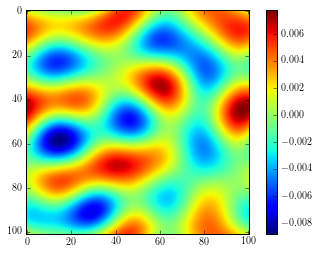
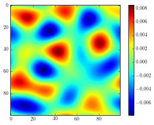

from pymks.datasets.cahn_hilliard_simulation import CahnHilliardSimulation
np.random.seed(99)
N = 100
phi = 0.01 * (2 * np.random.random((2, N, N)) - 1)
ch = CahnHilliardSimulation(gamma=1)
for i in range(10000):
ch.run(phi)
phi[:] = ch.response
print N
plt.imshow(phi[0])
plt.colorbar()
<matplotlib.colorbar.Colorbar instance at 0x7f3138ed37a0>

print N
plt.imshow(phi[0])
plt.colorbar()
<matplotlib.colorbar.Colorbar instance at 0x7f3138523098>

size = 500
0 size/2 size/2 -1
N = 10
a = np.arange(N / 2)
a[a > (N / 2 - 1)] = a[::-1][a > (N / 2 - 1)]
a = np.arange(N / 2)
b = np.concatenate((a, a[::-1]))
print b
s0 = 4, 3
s1 = 7, 6
#X = np.arange(s0[0] * s0[1]).reshape(s0)X
X = np.ones(s0)
Y = np.ones(s0)
print X
print Y
[[ 1. 1. 1.]
[ 1. 1. 1.]
[ 1. 1. 1.]
[ 1. 1. 1.]]
[[ 1. 1. 1.]
[ 1. 1. 1.]
[ 1. 1. 1.]
[ 1. 1. 1.]]
fX = np.fft.fftn(X, s=s1)
fY = np.fft.fftn(Y, s=s1)
fXY = fX * fY
fX_ = np.fft.fftn(X)
fY_ = np.fft.fftn(Y)
fXY_ = fX_ * fY_
XY_ = np.fft.ifftn(fXY_)
XY = np.fft.ifftn(fXY)
print XY.shape
print X.shape
print XY.real
print XY_.real
[[ 1.00000000e+00 2.00000000e+00 3.00000000e+00 2.00000000e+00
1.00000000e+00 -8.19450328e-17]
[ 2.00000000e+00 4.00000000e+00 6.00000000e+00 4.00000000e+00
2.00000000e+00 -7.65828478e-16]
[ 3.00000000e+00 6.00000000e+00 9.00000000e+00 6.00000000e+00
3.00000000e+00 -1.13008931e-15]
[ 4.00000000e+00 8.00000000e+00 1.20000000e+01 8.00000000e+00
4.00000000e+00 -1.36854907e-15]
[ 3.00000000e+00 6.00000000e+00 9.00000000e+00 6.00000000e+00
3.00000000e+00 -9.56116555e-16]
[ 2.00000000e+00 4.00000000e+00 6.00000000e+00 4.00000000e+00
2.00000000e+00 -3.08183581e-16]
[ 1.00000000e+00 2.00000000e+00 3.00000000e+00 2.00000000e+00
1.00000000e+00 -1.26239542e-16]]
[[ 12. 12. 12.]
[ 12. 12. 12.]
[ 12. 12. 12.]
[ 12. 12. 12.]]
tmp = np.roll(XY.real, -(s1[0] - s0[0]) / 2 + 1, axis=0)
print np.roll(tmp, -(s1[1] - s0[1]) / 2 + 1, axis=1)[:s0[0], :s0[1]]
[[ 4. 6. 4.]
[ 6. 9. 6.]
[ 8. 12. 8.]
[ 6. 9. 6.]]